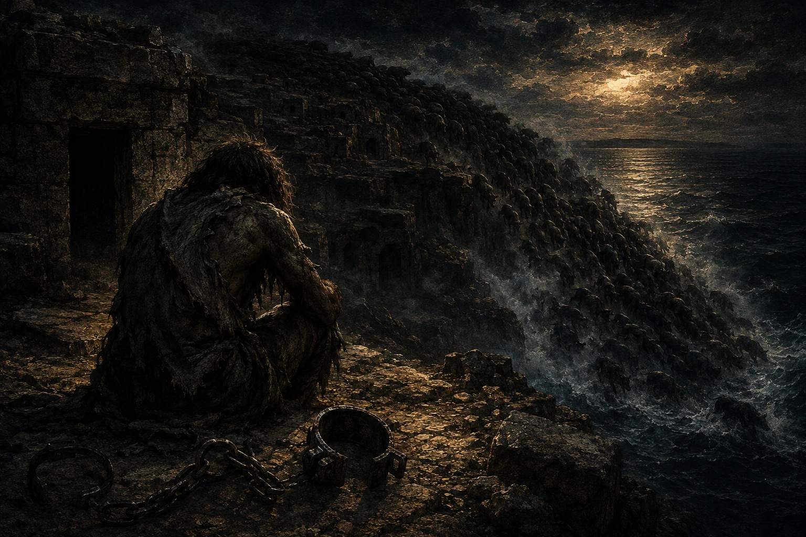

믿음의 항해 — 현장 준비물
인쇄해서 잘라 배치하세요 · 팀당 태블릿 1대 · 성경 4권 · 소요 80분

믿음호 — 출항을 기다리는 배
이 게임이 작동하는 원리
모든 자물쇠는 네 자리이고, 그 네 자리는 한 곳에 없습니다.
패드·현장 물건·성경·선생님 넷으로 쪼개져 있어서, 네 명이 흩어지지 않으면 숫자가 채워지지 않습니다.
패드만 붙잡고 있는 팀은 반드시 막힙니다.
자물쇠별 네 자리 출처
| 자물쇠 | 코드 | ① | ② | ③ | ④ |
|---|
승선 명부함
갑판 | 2031 |
성경 2 | 성경 0 | 현장 3 | 패드 1 |
출항 명령서
선장실 | 0822 |
교사 0 | 패드 8 | 현장 2 | 현장 2 |
사슬 자물쇠
화물칸 | 0829 |
패드 0 | 패드 8 | 교사 2 | 현장 9 |
선원 명부 궤
선원실 | 0854 |
패드 0 | 패드 8 | 현장 5 | 성경 4 |
등대 철문
등대 | 0901 |
패드 0 | 패드 9 | 교사 0 | 현장 1 |
※ 다섯 자물쇠의 숫자는 모두 설교 본문의 장·절 주소입니다.
2031=요20:31 · 0822=눅8:22 · 0829=눅8:29 · 0854=눅8:54 · 0901=눅9:1
배치표
| 인쇄물 | 배치 장소 | 주는 값 |
|---|
| 승선 표찰 (팀별) | 강당 입구 신발장·의자 등받이·게시판 뒤 | 2031의 ③ = 3 |
| 출항 명령서 | 강대상 아래 | 0822의 ③④ = 22 |
| 항해 카드 (팀별) | 성가대석 악보꽂이 / 강단 계단 화분 | 항해궤 전체 4자리 |
| 무덤 굴 지도 | 화물 상자 3개 중 가장 무거운 것 밑 | 0829의 ④ = 9 |
| 선원 명부 | 선원실 담당 교사가 소지 | 0854의 ③ = 5 |
| 깃발함 카드 | 등대(무대) 앞 상자 | 0901의 ④ = 1 |
| 보물 편지 (팀별) | 비밀 선창 담당 교사가 소지 | 보물궤 전체 4자리 |
| 성경 임무 카드 4장 | 팀에게 처음부터 한 묶음으로 지급 | 성경에서 찾는 숫자 |
| 교사 인장 카드 3장 | 미니게임 담당 교사 ①②③이 소지 | 이겨야 받는 숫자 |
반드시 확인 — 관리자 PIN은 3574입니다. 학생에게 노출되면 관리자 화면에서
모든 코드가 그대로 보이고 전체 해금이 가능합니다. 교사끼리만 공유하세요.
승선 표찰 — 팀별 3장 (2031의 ③ = 3)
팀 색 봉투에 넣어 강당 곳곳에 숨깁니다. 앞면은 표찰, 뒷면에 숫자가 있습니다.
베드로호
승 선 표 찰
믿음호 · 갈릴리 항로

이 표찰을 가진 자만 배에 오른다
야고보호
승 선 표 찰
믿음호 · 갈릴리 항로
이 표찰을 가진 자만 배에 오른다
요한호
승 선 표 찰
믿음호 · 갈릴리 항로
이 표찰을 가진 자만 배에 오른다
표찰 뒷면 — 위와 같은 순서로 뒷면에 인쇄
출항 명령서 (0822의 ③④ = 22)
강대상 아래에 둡니다. 봉랍(붉은 원) 부분을 뜯어야 숫자가 보이도록 접어 붙이세요.
출 항 명 령 서
믿음호 선장
“호수 저편으로 건너가자”
— 이것이 이 배가 받은 단 하나의 명령이다 —
봉랍을 뜯으라 ▶
22
출항 명령서 ③ ④ 자리
항해 카드 — 팀마다 숫자가 다릅니다 (조타실 항해궤)
주의 — 이 카드만 팀별로 숫자가 다릅니다. 옆 팀 어깨너머로 봐도 통하지 않게 하기 위함입니다.
반드시 해당 팀 색 봉투에만 넣으세요. 성경 주소 자물쇠(2031 등)는 전 팀 공통입니다.
베드로호
항 해 카 드
나침반 아래 적힌 수
8624
조타실 항해궤에 그대로 입력
야고보호
항 해 카 드
나침반 아래 적힌 수
5137
조타실 항해궤에 그대로 입력
요한호
항 해 카 드
나침반 아래 적힌 수
7412
조타실 항해궤에 그대로 입력
보물 편지 — 팀별 (비밀 선창 보물궤)
비밀 선창 담당 교사가 소지하다가, 팀이 비밀 선창에 도달하면 건넵니다.
베드로호
선장의 편지
…끝에 적힌 수
3327
보물궤 봉인
야고보호
선장의 편지
…끝에 적힌 수
6085
보물궤 봉인
요한호
선장의 편지
…끝에 적힌 수
2914
보물궤 봉인

무덤 섬 — 사슬을 끊은 자리
무덤 굴 지도 (0829의 ④ = 9)
화물 상자 3개 중 가장 무거운 것 밑에 깝니다. 상자를 옮겨야 나옵니다.
무 덤 굴 지 도
거라사 해안 · 벼랑 아래
⌂ ⌂ ⌂
⌂ ⌂ ⌂
굴의 수를 세지 말라. 세어야 할 것은 뒷면에 있다
선원 명부 (0854의 ③ = 5)
선 원 명 부
1 침상 — 사용 중
2 침상 — 사용 중
3 침상 — 사용 중
4 침상 — 사용 중
5 침상 — 비어 있음
6 침상 — 사용 중
선원 명부 궤 ③ 자리 = 비어 있는 침상 번호
깃발함 카드 (0901의 ④ = 1)
깃 발 함
마지막 한 장
▰
1
등대 철문 ④ 자리
성경 임무 카드 — 4장 한 묶음
팀에게 처음부터 지급합니다. 성경 담당 한 명이 들고 다니며 찾습니다.
선생님은 쪽수만 알려주고 내용은 말하지 않습니다.
성경 임무 ①
표적을 다 기록하지 않았다고 밝힌 책이 있다.
그 책의 장 번호 두 자리를 가져오라.
승선 명부함 ① ② 자리 · 정답 20
성경 임무 ②
폭풍 속에서 주님이 베개를 베고 주무셨다고 적은 복음서가 있다.
그 장 번호를 가져오라.
항해궤 보조 단서 · 정답 4 (막 4장)
성경 임무 ③
무덤 사이에 거하던 사람이 예수를 만나는 절 번호 두 자리를 가져오라.
(누가복음 8장)
보물궤 보조 단서 · 정답 27
성경 임무 ④
소녀의 손을 잡고 “아이야 일어나라” 하신 절의 끝자리를 가져오라.
(누가복음 8장)
선원 명부 궤 ④ 자리 · 정답 4 (8:54)
카드에 정답을 적어 두지 마세요. 위 “정답” 표기는 교사 확인용이므로,
학생용으로 인쇄할 때는 그 줄을 가리거나 잘라내고 주십시오.
선생님 인장 카드 — 미니게임 담당 교사가 소지
이겨야 받습니다. 진 팀은 즉시 재도전할 수 있습니다.
돛 허가 인장
① 매듭 시험
0
출항 명령서 ① 자리
상륙 허가 인장
③ 군대의 사슬
2
사슬 자물쇠 ③ 자리
미니게임 운영 규칙
| 게임 | 장소 | 규칙 | 소요 |
|---|
| ① 매듭 시험 | 강당 뒤편 |
60초 안에 옭매듭·8자매듭 중 2개를 밧줄로 완성. 교사 시범 1회 후 시작.
팀에서 2명까지 손댈 수 있다. 실패 시 즉시 재도전 | 1~2분 |
| ② 폭풍 신호수 | 복도 끝
(조명 낮춤) |
교사가 손전등으로 5자리 모스를 정확히 3회 송신.
팀에서 1명만 올 수 있다(몰려오면 무효). 소리로 알려주기 금지.
4회째 요청 시 2분 페널티 | 2~3분 |
| ③ 군대의 사슬 | 별실 또는
복도 반대편 |
팀원 4명 전원 팔에 리본을 채운다. 한 명씩 교사와 가위바위보,
이기면 자기 리본 해제. 지면 맨 뒤로. 4명 전부 풀려야 클리어 | 2~3분 |
② 폭풍 신호수가 송신할 모스 5자리는 82425입니다 (누가복음 8장 24-25절).
부호: −−−·· / ··−−− / ····− / ··−−− / ·····
필요 교사 6명(최소 5명) — 미니게임 3명 · 총괄/타이머 1명 · 성경 도우미 겸 안전 1명 · 폐회(등대) 1명.
클리어한 팀 학생이 다음 팀의 등대지기를 맡으면 1명을 아낄 수 있습니다.
군중 12인 포스터 (p9 · 벽에 붙이세요)
A2로 확대 인쇄해 벽에 붙입니다. 패드에는 답(번호)만 입력합니다.
네 명이 조건을 소리내어 읽으며 함께 후보를 지워 나가는 것이 이 문제의 목적입니다.

옷 가에 손을 대니 — 눅 8:43-44
교사용 — 정답 11번. 조건 4개(뒤로 왔다 / 손을 대었다 / 홀로 있었다 / 머리를 가린 여인)로
소거하면 11번만 남습니다. 5번이 미끼입니다(조건 3개는 맞지만 앞줄). 이 상자는 잘라내고 붙이세요.
거꾸로 쓰인 편지 (p8 · 손거울과 함께 배치)
화물칸 담당 교사가 손거울과 함께 건넵니다. 패드에는 완성된 답만 입력합니다.

새사람이 된 그가 남긴 편지
교사용 — 정답 새사람전하라. 밑줄 글자에 붙은 작은 숫자는 누가복음 8장의 절 번호이고,
작은 것부터 세우면 27새 · 29사 · 33람 · 35전 · 38하 · 39라 입니다. 이 상자는 잘라내고 붙이세요.
레핀 「야이로의 딸을 살리심」 (p10 · A3 벽 인쇄 + 손거울)
A3로 확대 인쇄해 벽에 붙이고 손거울을 함께 둡니다.
아래 계산식은 상하 반전되어 있어 거울로만 읽힙니다.

일리야 레핀, 「야이로의 딸을 살리심」 (1871)
| Ⓐ | 여인이 앓은 햇수 (눅 8:43) |
|---|
| Ⓑ | 소녀의 나이 (눅 8:42) |
|---|
| Ⓒ | 그림 속에서 타오르고 있는 촛불의 수 (직접 세라) |
|---|
| Ⓓ | 방에 들어가도록 허락받은 사람의 수 (눅 8:51) |
|---|
교사용 — 정답 129. Ⓐ12 Ⓑ12 Ⓒ3 Ⓓ5 → (12×12)−(3×5)=129.
Ⓓ에서 예수님까지 세어 6을 쓰는 실수가 가장 흔합니다(베드로·요한·야고보와 아이의 부모 = 5).
이 상자는 잘라내고 붙이세요.